Chapter 7 Data Visualization with ggplot2
In this chapter, we will learn using ggplot2 to carry out data visualization tasks. Before the lecture, please install the package first.
install.packages('ggplot2') ## you only need to run this code once7.1 Grammer of Graphics (gg)
We have grammar for languages. Similarly, we have grammar for graphics. That’s where gg of ggplot2 comes from. ggplot2 has seven grammatical elements listed in the table below (DataCamp 2019).
| Element | Description |
|---|---|
| Data | The dataset being plotted. |
| Aesthetics | The scales onto which we map our data. |
| Geometries | The visual elements used for our data. |
| Facets | Plotting small multiples (subplots). |
| Statistics | Representations of our data to aid understanding. |
| Coordinates | The space on which the data will be plotted. |
| Themes | All non-data ink. |
Let’s take the codes below as an example to show how different elements work in ggplot2. Then, we might have an idea what is each element and how does it work.
Firstly, we need to import the packages and the Minneapolis ACS dataset. We will use dplyr to wrangle the dataset.
library(ggplot2)
library(dplyr)
minneapolis <- read.csv('minneapolis.csv')ggplot(minneapolis, ## Data
aes(x = AGE, y = INCTOT)) + ## Aesthetics
geom_point() + ## Geometries
facet_wrap(vars(YEAR)) + ## Facets
stat_smooth(method = "gam", se = FALSE, col = "blue") + # Statistics
scale_x_continuous('Age', limits = c(0, 100)) +
scale_y_continuous('Personal income (dollars)') + # Coordinates
labs(title = 'Age and personal income in Minneapolis (2010-2019)') +
theme_bw() # Themes
The figure shows the scatter plots of age and personal income in the city of Minneapolis from 2010 to 2019. In addition, the plot fits a nonlinear relationship (the blue line) between the age and personal income for each year.
7.2 Data, Aesthetics, and Geometries
Generally, if you want to draw figures with ggplot2, you need at least three elements, which are data, aesthetics, and geometries. Data is the dataset we want to visualize. Aesthetic specifies the variables and related attributes. Geometry indicates the plot type and related attributes. Take the example above again. We want to visualize the variables of AGE and TOTINC (aesthetic) of the dataset minneapolis (data, the Minneapolis ACS dataset) with a scatter plot (geometry).
Similar to dplyr, ggplot2 also has its own fashion of coding. We start with the ggplot() function. Please pay attention that there is no 2 in the name of the function. In the function, we first indicate the name of the dataset (usually a data frame). Then we use aes() to indicate the scales (aesthetic) we want to map our data. Here, we map AGE to x axis, and TOTINC to y axis. Then we use a plus sign + to connect it to other functions. We are going to draw a scatter plot, so we use geom_point(). We only use a 2017 subsample from the Minneapolis ACS dataset. Note that the observations with missing values have been removed during plotting (that’s why we have a warning message).
## select a subsample of those in 2017
minneapolis_2017 <- filter(minneapolis, YEAR == 2017)
ggplot(minneapolis_2017, # Data
aes(x = AGE, y = INCTOT)) + # Aesthetics
geom_point() # Geometries## Warning: Removed 454 rows containing missing values (geom_point).Based on this plot, we have a overall idea of the relationship between AGE and TOTINC. When age increases, people’s personal income increases. However, after a certain age, people’s personal income decreases as their age increases. (This relationship is just a type of correlation, not causality.)
We could add more attributes as aesthetic elements in the plot. For example, we could use color to indicate the value of EDUC by adding col = EDUC. (col, color, and colour all work here.)
ggplot(minneapolis_2017,
aes(x = AGE, y = INCTOT, col = EDUC)) +
geom_point()## Warning: Removed 454 rows containing missing values (geom_point).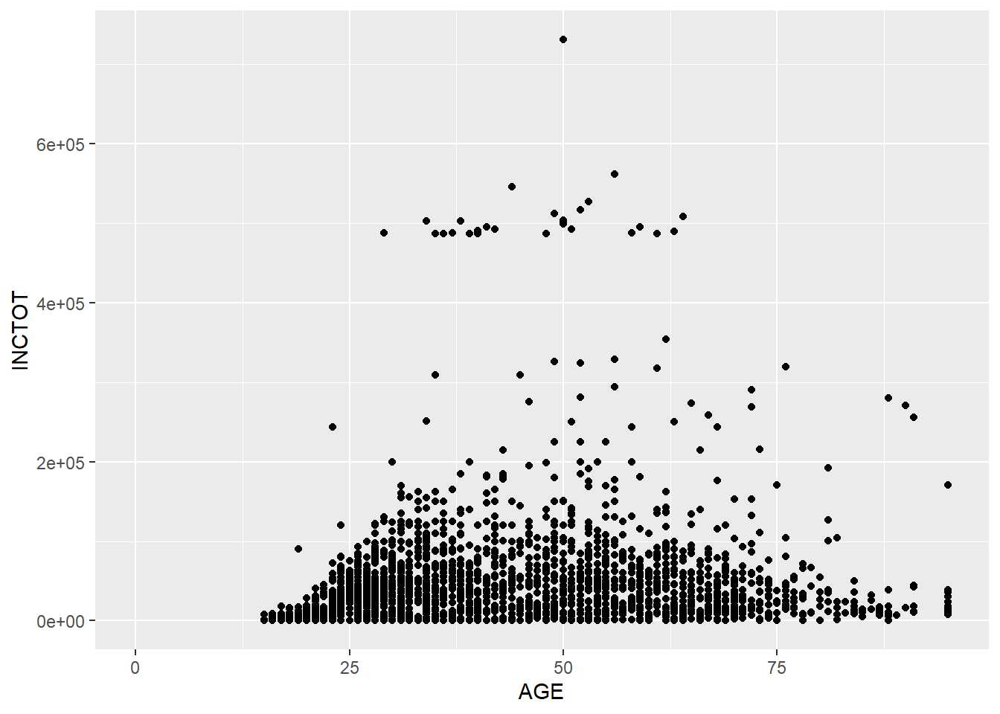
Now we have more information in the result. While the respondent has a higher education level, s/he has a higher personal income.
Here, EDUC is a continuous variable, so ggplot2 uses the darkness of color to indicate the value. However, if we use a categorical variable or a factor (e.g., binomial variable), ggplot2 will use different colors to show different levels.
## remove observations with missing employment status from the dataset
## change EMPSTAT from numeric values to corresponding characteristic values
minneapolis_emp <- minneapolis_2017 %>%
filter(EMPSTAT != 0) %>%
mutate(
EMPSTAT = case_when(
EMPSTAT == 1 ~ 'Employed',
EMPSTAT == 2 ~ 'Unemployed',
EMPSTAT == 3 ~ 'Not in labor force'
)
)
ggplot(minneapolis_emp,
aes(x = AGE, y = INCTOT, col = EMPSTAT)) +
geom_point()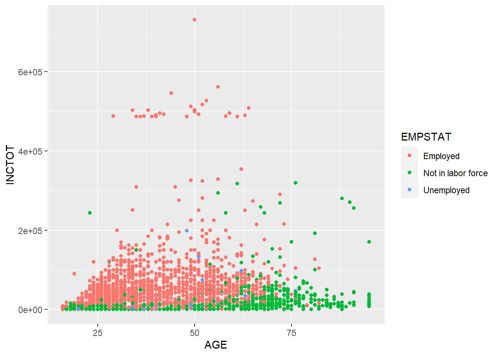
EMPSTAT stands for the employment status (employed, not in labor force, unemployed). R usually treats variables with characteristic values as factor. ggplot2 uses different colors to stand for different employment status. By reading the plot, we know that as age increases, more people are not in labor force. The personal income of employed people are higher than those not in labor force. (There are not many unemployed observations in this dataset, so it is hard to tell its pattern.)
Besides color, there are several other parameters to show various aesthetics of the plots. There are differences between continuous variable and categorical variable. Furthermore, if you want to map variables in those aesthetics, you have to do it in the aes() function.
| Parameter | Description | Continuous variable | Categorical variable |
|---|---|---|---|
| x | x axis position | ✓ | |
| y | y axis position | ✓ | |
| size | Diameter of points, thickness of lines | ✓ | |
| alpha | Transparency | ✓ | ✓ |
| color | Color of dots, outlines of other shapes | ✓ | ✓ |
| fill | Fill color | ✓ | ✓ |
| labels | Text on a plot or axes | ✓ | |
| shape | Shape of point | ✓ | |
| linetype | Line dash pattern | ✓ |
Geometry has many different types. For examples, geom_point() for scatter plot, geom_bar() for bar plot, geom_boxplot() for box plot, etc. Most functions of geometries are self-explained, so you could tell what their usages easily. We all talk about those commonly used geometries such as scatter plot, bar plot, line plot, etc in the following parts.
7.2.1 Scatter plot
We use geom_point() to plot scatter plot. In the example below, we map AGE to x axis, and INCTOT to y axis. We indicate the color by set col = EDUC. The darkness of each point is decided by its value of EDUC (when the value is larger, the color is lighter).
ggplot(minneapolis_2017,
aes(x = AGE, y = INCTOT, col = EDUC)) +
geom_point()## Warning: Removed 454 rows containing missing values (geom_point).
7.2.2 Bar plot
In the example below, we draw a bar plot to show the number of respondents in different racial groups. In aes(), we only indicate the variable RACE by setting x = RACE. R then will count the number of respondents for each racial groups. We, then, use geom_bar() to plot it.
ggplot(minneapolis_2017,
aes(x = RACE)) +
geom_bar()
In the following example, we count the number of respondents in each racial groups firstly. In the next step, we plot the bar plot by setting stat = 'identity' in geom_bar() to tell R to plot a bar plot based on the values directly (without counting).
## count the number of respondents based on RACE
minneaplis_race <- minneapolis_2017 %>%
group_by(RACE) %>%
summarise(count = n())
ggplot(minneaplis_race, aes(x = RACE, y = count)) +
geom_bar(stat = 'identity') # you need to specify stat = 'identity' to plot the value for each year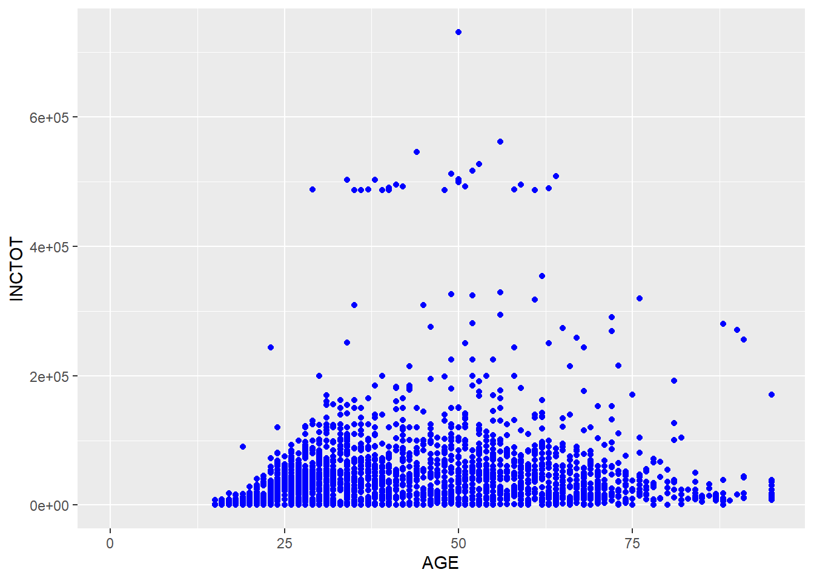
Or you could use another geometry called geom_col() to do it.
ggplot(minneaplis_race, aes(x = RACE, y = count)) +
geom_col()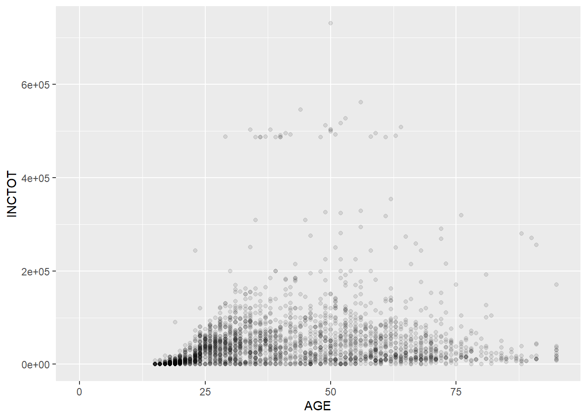
7.2.3 Line plot
In this example, we use geom_line() to draw a line plot.
## calculate the average personal income for each year
minneapolis_year <- minneapolis %>%
group_by(YEAR) %>%
summarise(AvgInc = mean(INCTOT, na.rm = T))
## line plot of the trend of average personal income
ggplot(minneapolis_year,
aes(x = YEAR, y = AvgInc)) +
geom_line(col = 'Blue') # indicate the color of the line by setting col = 'Blue'7.2.4 Boxplot
In the example below, we draw a box plot for the personal income in each racial group. To do this, we map RACE to the x axis, and INCTOT to the y axis. We use factor() to transfer RACE to a factor (categorical variable).
ggplot(minneapolis_2017, aes(x = factor(RACE), y = INCTOT)) +
geom_boxplot()## Warning: Removed 454 rows containing non-finite values (stat_boxplot).
7.2.5 Pie chart
In ggplot2, it is not as intuitive as the base function pie() to draw a pie chart.
ggplot(minneaplis_race, aes(x = '', y = count, fill = factor(RACE))) +
geom_bar(width = 1, stat = 'identity') +
coord_polar('y') # transfer the coordinate system to the polar one
Whatggplot2 does here to draw a pie plot is to create a bar plot first.
ggplot(minneaplis_race, aes(x = '', y = count, fill = factor(RACE))) +
geom_bar(width = 1, stat = 'identity')
And then transfer the coordinate system to the polar one.
ggplot(minneaplis_race, aes(x = '', y = count, fill = factor(RACE))) +
geom_bar(width = 1, stat = 'identity') +
coord_polar('y')7.3 Facets
If you want to split up your data by one or more variables and plot each subset in one figure, facet is the element you want to use.
In the following example, we draw a scatter plot for each racial group. In each plot, we map AGE to the x axis and INCTOT to y axis. The three plots are aligned in a row.
p <- ggplot(minneapolis_2017, # store the plot result in variable p
aes(x = AGE, y = INCTOT)) +
geom_point()
p + facet_grid(. ~ RACE) # Facets, for each racial group## Warning: Removed 454 rows containing missing values (geom_point).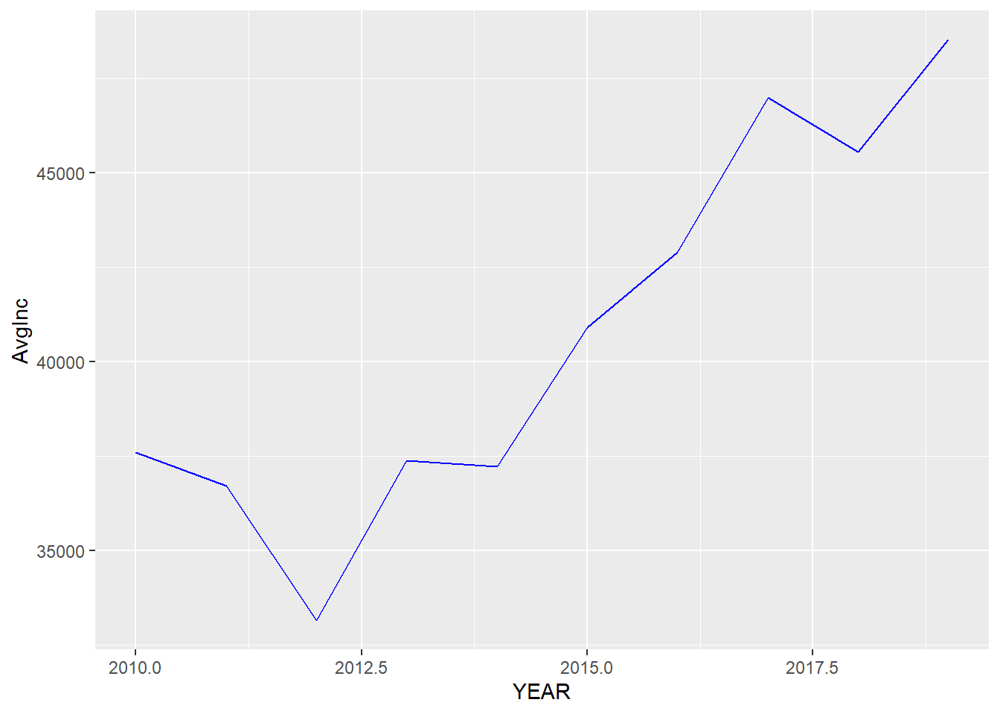
If we want to align the plots in a column, exchange the position of the variable in the function.
p + facet_grid(RACE ~ .) # Facets, pay attention to the position of RACE and the dot sign## Warning: Removed 454 rows containing missing values (geom_point).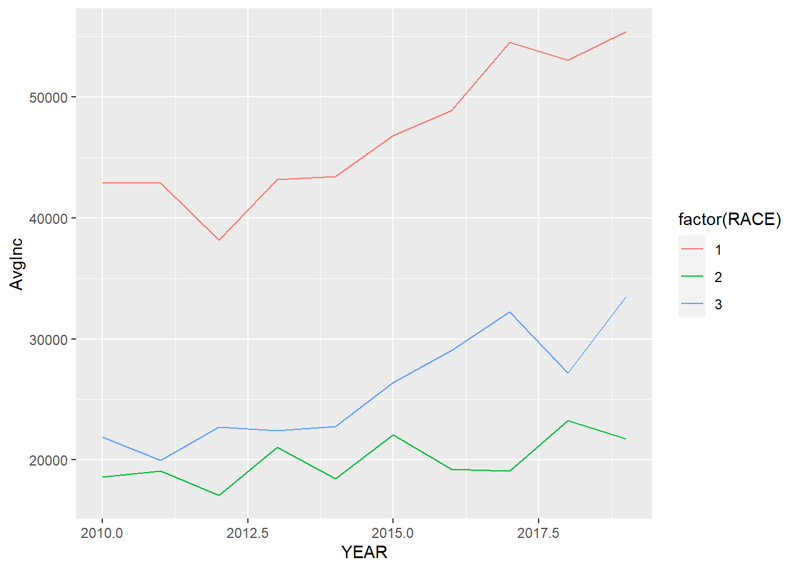
We could put more variables to split the plots. In the following example, we put one more variable SEX in the facet_grid().
p + facet_grid(SEX ~ RACE) # add vs## Warning: Removed 454 rows containing missing values (geom_point).We could use the margins = T to add more plots showing the aggregation of the plots in each column or row.
p + facet_grid(SEX ~ RACE, margins = T) # add aggregation plots for each row and column## Warning: Removed 1816 rows containing missing values (geom_point).We could use labeller = label_both to add more information in the label.
p + facet_grid(SEX ~ RACE, labeller = label_both) # add more info in the label## Warning: Removed 454 rows containing missing values (geom_point).7.4 Statistics
You could fit a line to see the general trend of the scatter plot by adding stat_smooth().
p <- ggplot(minneapolis_2017,
aes(x = AGE, y = INCTOT)) +
geom_point()
p + stat_smooth(method = "lm") # linear line## `geom_smooth()` using formula 'y ~ x'## Warning: Removed 454 rows containing non-finite values (stat_smooth).## Warning: Removed 454 rows containing missing values (geom_point).p + stat_smooth(method = 'loess') # non-linear line## `geom_smooth()` using formula 'y ~ x'## Warning: Removed 454 rows containing non-finite values (stat_smooth).## Warning: Removed 454 rows containing missing values (geom_point).You could draw a histogram for the dataset with geom_histogram().
p <- ggplot(minneapolis_2017, aes(AGE))
p + geom_histogram(binwidth = 5) # the width of each category is 5
p + geom_histogram(bins = 30) # the number of bins is 30
You could fit a density line for the histogram.
p + geom_histogram(aes( y = ..density..), binwidth = 5, col = 'Black', fill = 'White') + # use density instead of count
geom_density(alpha = .2, fill = 'Grey') Another way to show more statistics about your data is box plot, which we have been introduced before.
p <- ggplot(minneapolis_2017, aes(x = factor(SEX), y = INCTOT))
p + geom_boxplot()## Warning: Removed 454 rows containing non-finite values (stat_boxplot).7.5 Coordinates
While there are many coordinate systems supported by ggplot2, the most commonly used is Cartesian coordinate system, which is the combination of x axis and y axis orthogonally.
7.5.1 Zooming in and out
In the following example, we zoom in our plot to a specific area.
p <- ggplot(minneapolis_2017, aes(x = AGE, y = INCTOT)) +
geom_point()
p + coord_cartesian(xlim = c(16, 100), ylim = c(0,20000))## Warning: Removed 454 rows containing missing values (geom_point).7.5.2 Ratio
We could change the ratio of the length of a y unit relative to the length of a x unit (\(\frac{\text{y unit}}{\text{x unit}}\)).
p <- ggplot(minneapolis_2017, # Data
aes(x = AGE, y = EDUC)) + # Aesthetics
geom_point()
p + coord_fixed(ratio = 1) ## 1 mean the units are same in x and y axisp + coord_fixed(ratio = 5)7.5.3 Swaping the axes
p + coord_flip()ggplot(minneapolis_2017, aes(x = factor(SEX), y = INCTOT)) +
geom_boxplot() +
coord_flip()## Warning: Removed 454 rows containing non-finite values (stat_boxplot).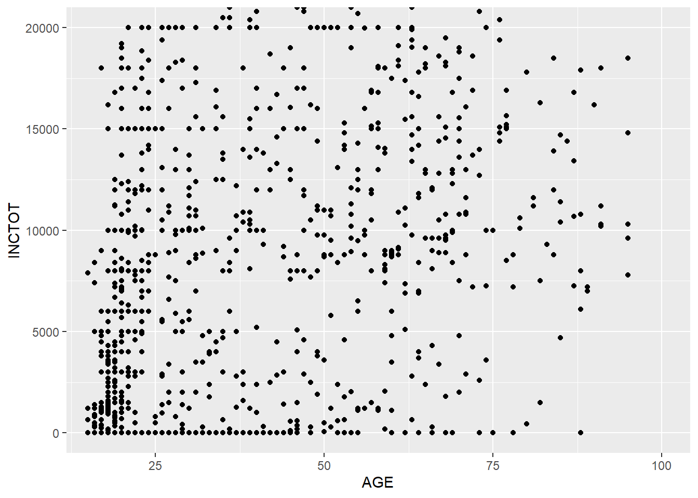
ggplot(minneapolis_2017,
aes(x = RACE)) + # Aesthetics
geom_bar() +
scale_y_reverse()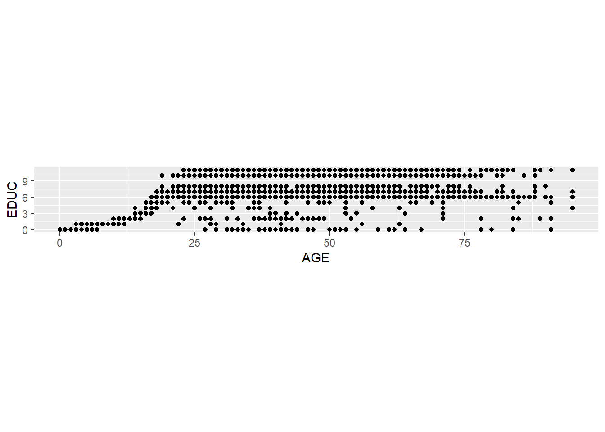
7.5.4 Polar coordinate system
We touched the polar coordinate system a little bit when drawing a pie chart.
ggplot(minneapolis_2017, aes(x = '', fill = factor(EDUC))) +
geom_bar(width = 1) +
coord_polar(theta = 'y')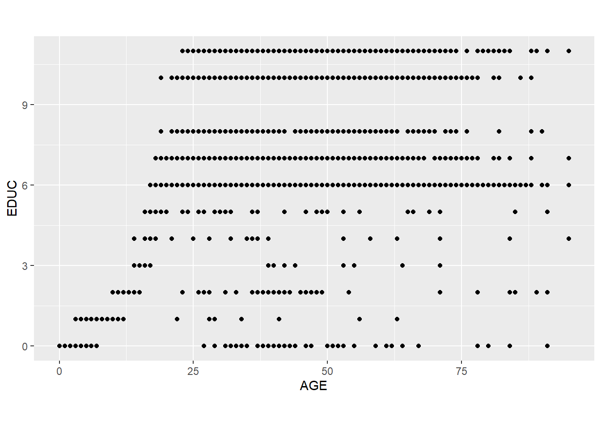
We could do this in a different way.
ggplot(minneapolis_2017, aes(factor(EDUC))) +
geom_bar(width = 1, col = 'Black', fill = 'Grey') +
coord_polar()7.6 Themes
ggplot2 is powerful in its flexibility of themes.
7.6.1 Add labels
Add labels with labs() function.
p <- ggplot(minneapolis_2017, aes(x = AGE, y = INCTOT)) +
geom_point() +
geom_smooth(method = 'loess')
p + labs(title = 'Age and personal income in Minneapolis (2017)', # title of the plot
subtitle = 'Data source: American Community Survey', # sub title
x = 'Age', # x label
y = 'Personal income (dollars)') # y label## Warning: Removed 454 rows containing non-finite values (stat_smooth).## Warning: Removed 454 rows containing missing values (geom_point).Or use ggtitle(), xlab(), and ylab() instead.
p + ggtitle('Age and personal income in Minneapolis (2017)') + # title
xlab('Age') + # x label
ylab('Personal income (dollars)') # y label## Warning: Removed 454 rows containing non-finite values (stat_smooth).## Warning: Removed 454 rows containing missing values (geom_point).7.6.2 Change ticks
Here is an example of changing the ticks for a discrete variable.
p <- ggplot(minneapolis_2017, aes(x = factor(SEX), y = INCTOT))
p + geom_boxplot() +
scale_x_discrete(name = "Gender", # name of the x axis
labels = c('Male', 'Female')) # change 1 and 2 to Male and Female## Warning: Removed 454 rows containing non-finite values (stat_boxplot).7.6.3 theme() function
theme() function could change the styles of all components of plots. Here are a few examples about it (ggplot2 2019).
p <- ggplot(minneapolis_2017, aes(x = AGE, y = INCTOT)) +
geom_point() +
labs(title = 'Age and personal income in Minneapolis (2017)',
subtitle = 'Data source: American Community Survey',
x = 'Age',
y = 'Personal income (dollars)')
p # original plot## Warning: Removed 454 rows containing missing values (geom_point).
We could use plot.title to change the style of a title in the plot. In the following example, we change the font size of the title by setting element_text() and making size to be twice larger as the default one.
p + theme(plot.title = element_text(size = rel(2)))## Warning: Removed 454 rows containing missing values (geom_point).We could also use absolute value to indicate the size directly.
p + theme(plot.title = element_text(size = 15))## Warning: Removed 454 rows containing missing values (geom_point).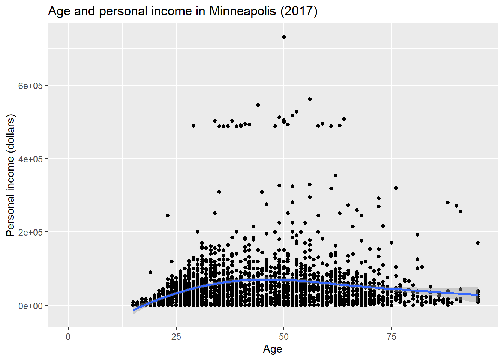
We could change the background of the plot by setting the value of plot.background in the theme() function. For example, if we want to change the color, we could set element_rect() and fill = 'red'.
p + theme(plot.background = element_rect(fill = 'red'))## Warning: Removed 454 rows containing missing values (geom_point).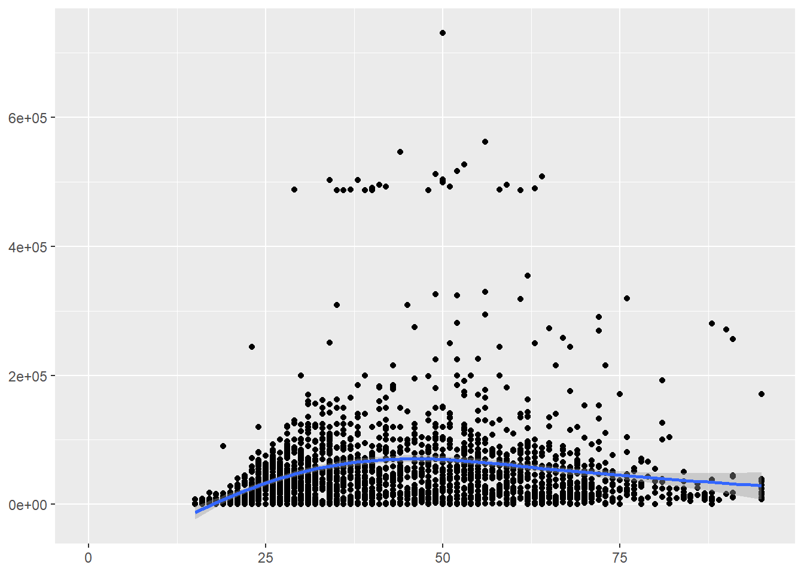
More specifically, if we want to change the style of the panel, which is the inner part restricted by x and y axes, we could set the value of panel.background.
p + theme(panel.background = element_rect(fill = 'green', color = 'red'))## Warning: Removed 454 rows containing missing values (geom_point).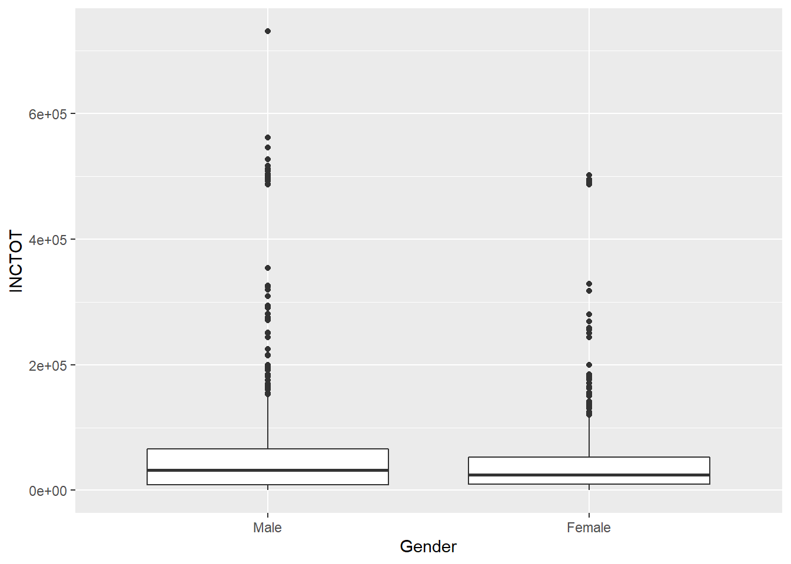
We could set the line type of the panel’s border.
p + theme(panel.border = element_rect(linetype = 'dashed', fill = NA))## Warning: Removed 454 rows containing missing values (geom_point).Change the attributes of the lines for the grid. element_line() stands for the attributes of the lines.
p + theme(panel.grid.major = element_line(colour = 'black'),
panel.grid.minor = element_line(colour = 'blue'))## Warning: Removed 454 rows containing missing values (geom_point).Use element_blank() to remove the themes of the target.
p + theme(panel.grid.major.y = element_blank(),
panel.grid.minor.y = element_blank())## Warning: Removed 454 rows containing missing values (geom_point).We could put the grid line on the top of our data by setting panel.ontop = TRUE.
p + theme(
panel.background = element_rect(fill = NA),
panel.grid.major = element_line(colour = 'Blue'),
panel.ontop = TRUE
)## Warning: Removed 454 rows containing missing values (geom_point).Change the line style of the axis.
p + theme(
axis.line = element_line(size = 2, colour = 'red')
)## Warning: Removed 454 rows containing missing values (geom_point).Change the text style of the axis.
p + theme(
axis.text = element_text(colour = 'Green', size = 15)
)## Warning: Removed 454 rows containing missing values (geom_point).Change the attributes of the axis ticks.
p + theme(
axis.ticks = element_line(size = 1.5)
)## Warning: Removed 454 rows containing missing values (geom_point).And y label.
p + theme(
axis.title.y = element_text(size = rel(1.5), angle = 30)
)## Warning: Removed 454 rows containing missing values (geom_point).
Now, let’s see what we could do for the legend.
p <- ggplot(minneapolis_emp, aes(x = AGE, y = INCTOT, color = factor(EMPSTAT))) +
geom_point() +
labs(
x = 'Age',
y = 'Personal income (dollars)',
color = 'Employment status'
)
p ## orginal plotRemove the legend by setting its position as legend.position = 'none'.
p + theme(
legend.position = 'none'
)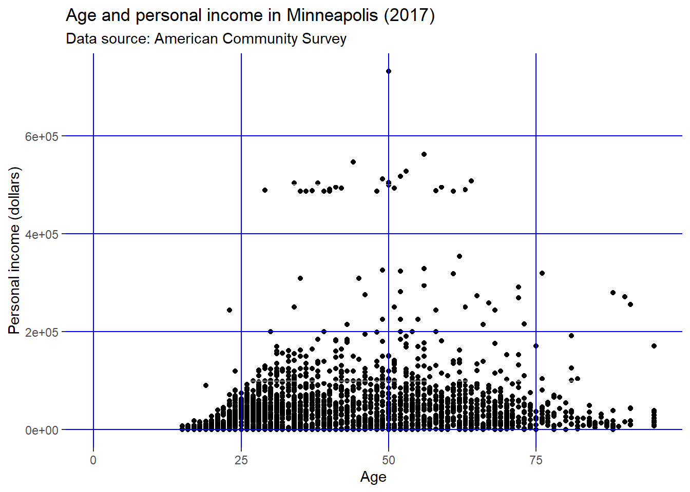
p + theme(
legend.position = 'top'
)By setting legend.justification for the legend, we anchor point for positioning legend inside plot (“center” or two-element numeric vector) or the justification according to the plot area when positioned outside the plot
p + theme(
legend.justification = 'top'
)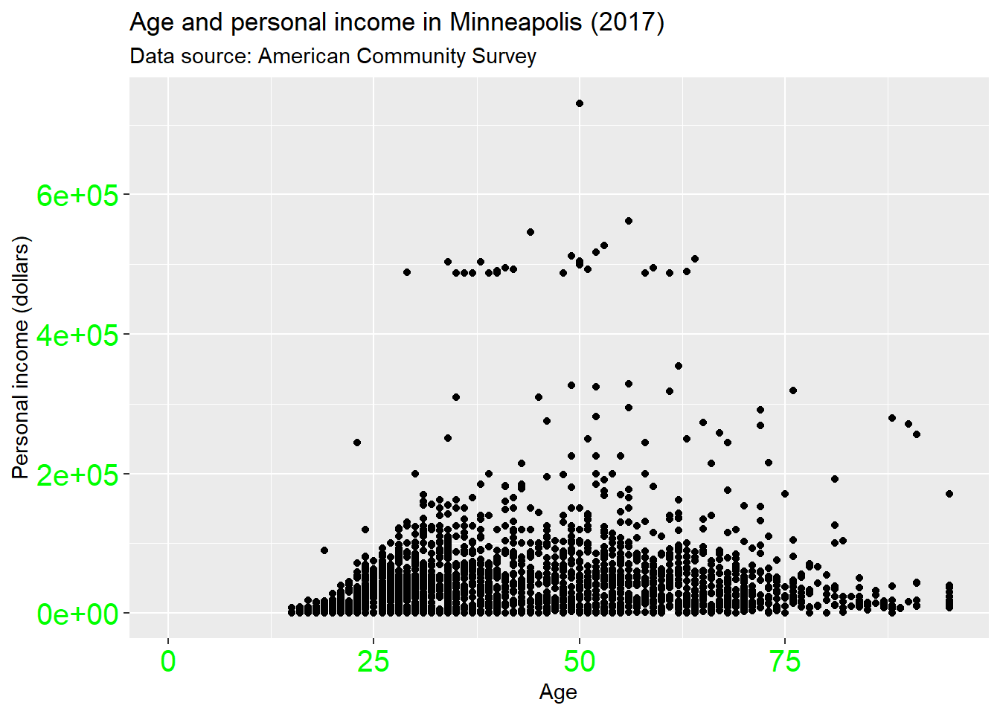
p + theme(
legend.position = c(.95, .95),
legend.justification = c('right', 'top'),
legend.box.just = 'right'
)p + theme(
legend.box.background = element_rect(),
legend.box.margin = margin(6, 6, 6, 6)
)Set attributes for the key of the legend.
p + theme(
legend.key = element_rect(fill = 'white', colour = 'black')
)Set attributes for the text of the legend.
p + theme(
legend.text = element_text(size = 8, colour = 'red', face = 'bold')
)If you do not like to customize the theme one element by one element. ggplot2 also provides some function which give you a complete theme. For example, the theme_bw() we used at the start of this lecture. Note that complete theme can cover the setting of theme before it (not those after it).
p + theme_bw()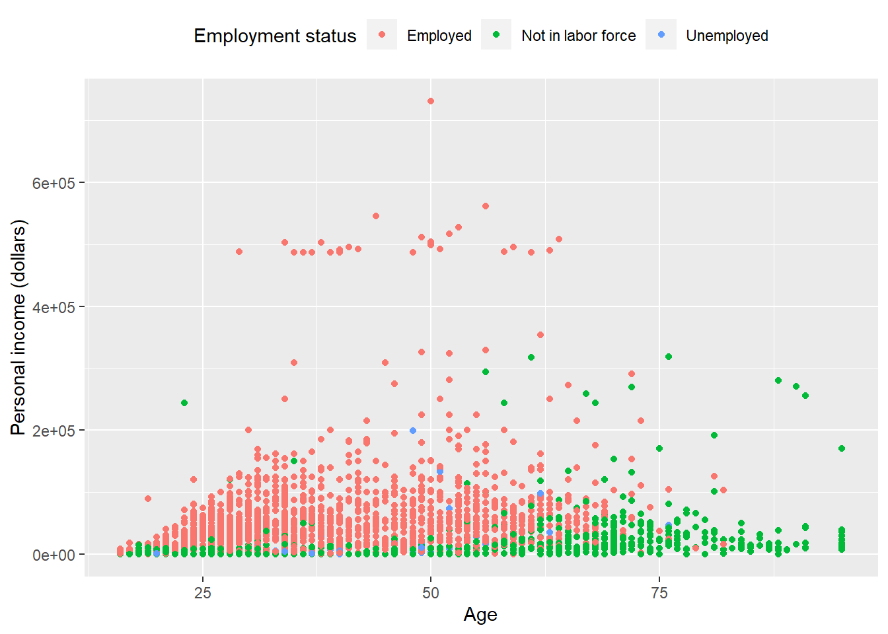
p + theme_minimal()p + theme_dark()Please check here for more complete theme.